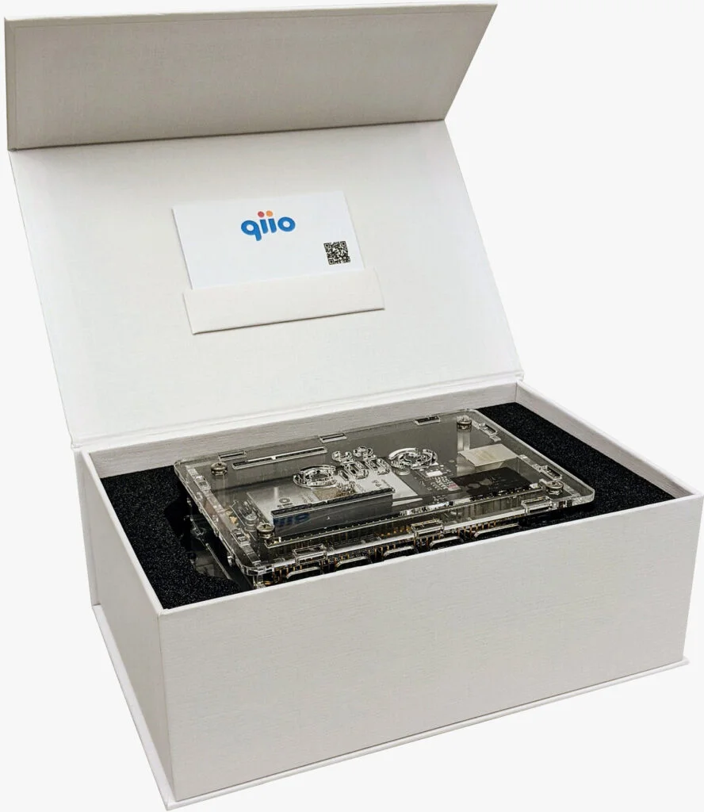

PoC in a Box Package

Features
Proof-of-Concept IoT development kit optimized for cellular operation based on Microsoft’s Azure Sphere®. Plug and Play in 190 countries. Works seamlessly with your existing Azure platform.
Seamlessly migrates to the q200 Guardian, the most secure cellular IoT solution on the market